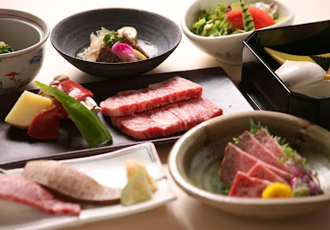
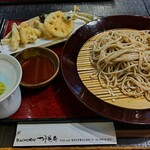
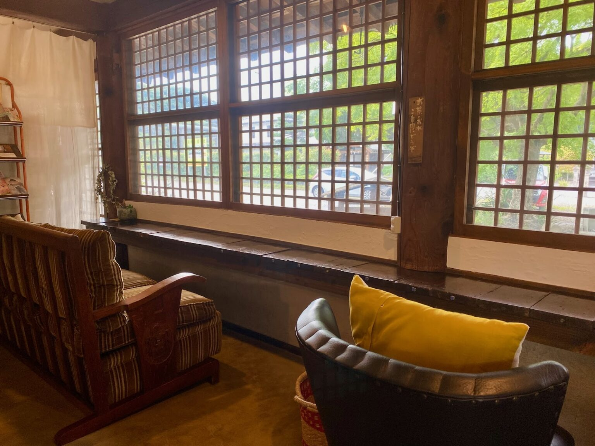

Gourmet
おすすめグルメ

近江肉せんなり亭伽羅
風上ある店構えと趣のある店内には座敷席や掘りごたつ積、テーブル席があり、ゆったりと食事が楽しめます。とろけるような味わいのすき焼きやステーキなど、本格的近江牛が気軽に味わえます。

つる亀庵
彦根城のお堀端にあり、とても風情のあるお店です。伊吹山の契約農家から仕入れたそば粉と伊吹山麓の湧水を使用し、かつて献上品だった味を再現します。訪れるたびに趣の異なるそばが食べられるとあって、リピーターも多いようです。

ほっこりカフェ朴
古民家を改装した隠れ家的カフェで、地元の人から観光客まで人気の店です。メニューは店内の黒板を見て決めます。ご飯セットやカレー、デザートなどがあります。さらに季節ごとや日ごとで内容は変わるので、いつ訪れても飽きが来ず楽しめるのも魅力ポイントといえるでしょう。